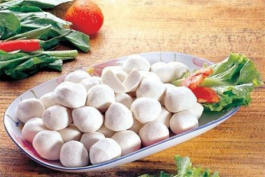
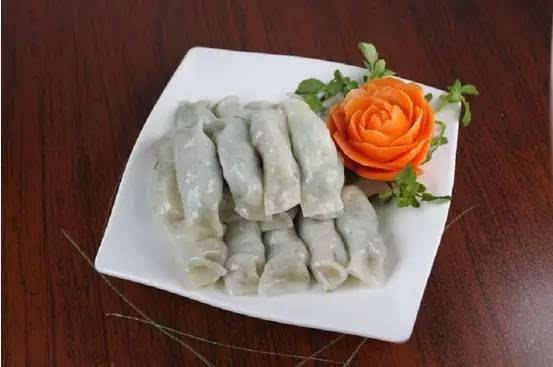
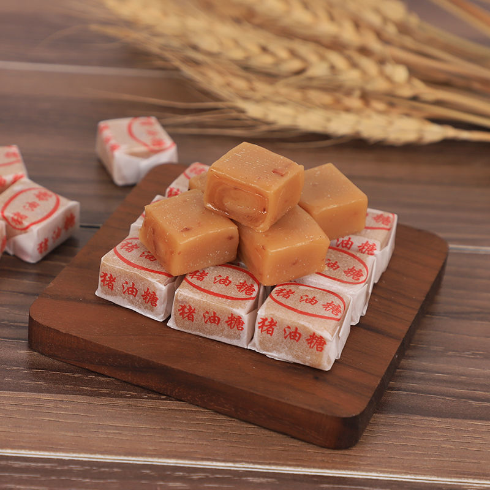

综述
汕尾美食有汕尾、陆丰虾姑、 汕尾菜果、海丰猪油糖、奇味梅、菠萝、擂茶、美人芋、姜薯、青梅果汁、柿饼 、乌盾山茶、虾姑、陆河坑螺、陆河年糕、咸茶、潮汕赤蟹、小米、牛肉饼、菜粿、五果汤、客家米食、客家娘酒。
| 菜名 | 图片 | 简介 |
|---|---|---|
擂茶 |
 |
擂茶，也叫咸茶。全国农村吃擂茶的地方并不多，广东的汕尾市和揭西县以及桂、赣、湘西的部分地区，才有此习俗。海丰县城以及沿海一带的乡镇，吃擂茶时，还加进加工好的芹菜、葱、蒜、虾米、鱿丝，味道极佳，刺激食欲。 吃擂茶的习俗，古已有之。清代茹敦和在其所著《越言释》中记载：“江广间有擂茶，是羌盐煎茶遣制，有存古意。”清代知名举人海丰的“阿凡提”黄汉宗曾写一诗：“海丰时俗尚咸茶，牙钵擎来共一家，厚薄人情何处见？看她多少下芝麻。” 盛夏吃擂茶，能消暑止渴，生津润肺，又提神醒脑，消除疲劳。寒冬吃擂茶，可促进新陈代谢，卸寒保暖。 |
甲子鱼丸 |
 |
甲子鱼丸是广东汕尾市陆丰市甲子镇有名的传统小吃，属于粤菜系。 此菜历史悠久，制作技术精湛，鲜甜爽脆，味道鲜美。 由于甲子镇地理得天独厚，拥有全国一级渔港---甲子渔港，取材方便，在宋朝年间就开始有制作，经过这么多年的历史，一直传承。 鱼丸制作的工艺有了很大的改进，采取手工和机械双工艺进行制作，极大的提高了鱼丸的弹性。 |
汕尾菜粿 |
 |
菜包粿是汕尾地区特色小吃, 是广东省汕尾地区最有名的特色风味小食，极具地方特色，远近闻名汕尾市梅陇一带的时节粿品。 汕尾菜稞是一道美味可口的传统名点，属于粤菜系。吃时再用油煎，又酥又韧，味美肉香，极其可口； 或者直接由米浆和虾仁、肉丁、蔬菜等拌在一起，蒸一层，放一层，重叠而蒸，叫做重（叠）糕稞。 吃时直切成一块块，佐以生油配料，又热又烫，鲜嫩甜滑，非常可口。 |
猪油糖 |
 |
猪油糖，广东省汕尾市海丰县土特产，流行在粤东潮汕地区的一种零食，是海丰人把猪油与面粉、食糖制成的 一种糖果。 猪油糖润滑爽口，柔软生香，难免让人领略到猪油的芬香与独特美味。 海丰人把猪油与面粉、食糖制成糖果，是对营养学的一大贡献，猪油糖甜而不厌，油而不腻，含有适量的猪油，既能给身体补充能量，又能饱尝口福，是其他糖果不能比拟的。 |
| ... | ... | ... |